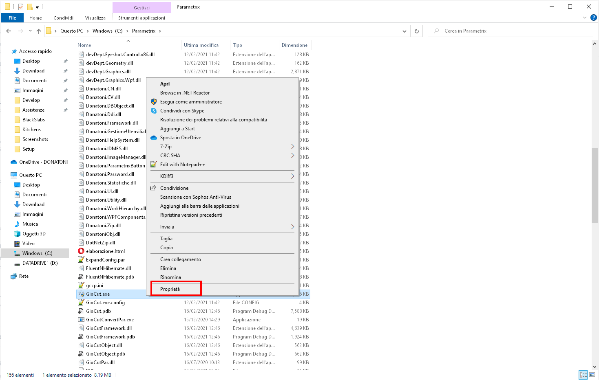
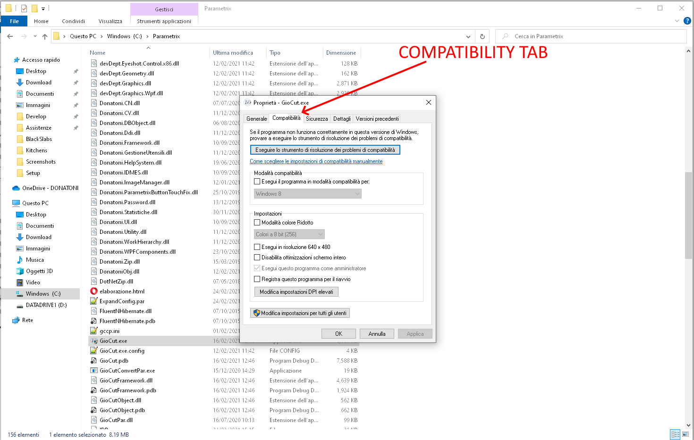
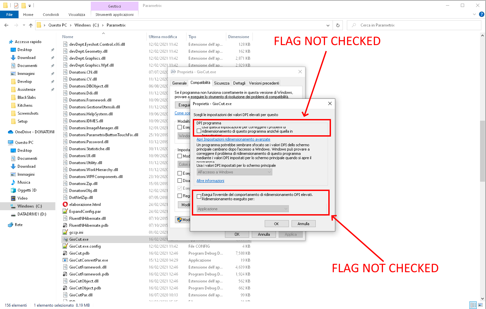
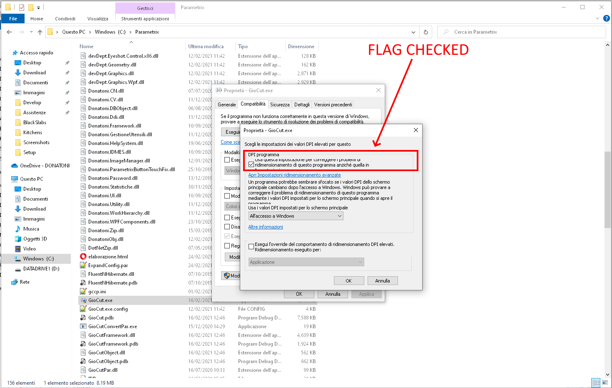
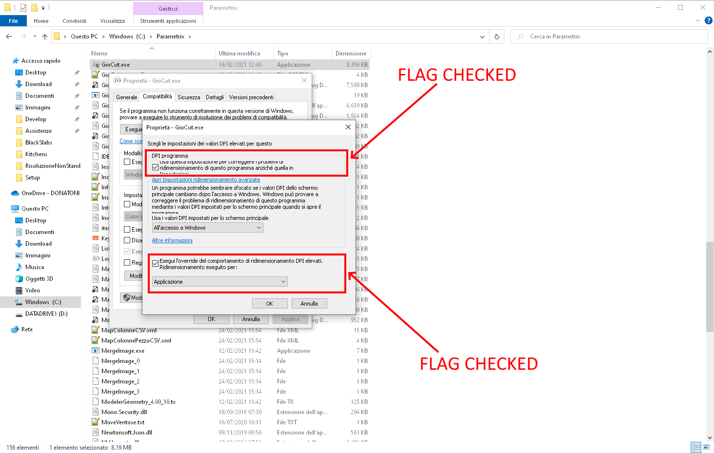

Visualization issues in case of non-standard screen settings setted
Installando Parametrix su un computer con impostazioni schermo non standard (es: ridimensionamento 200%), può capitare di riscontrare alcuni problemi:
- visualizzazione anomala delle varie finestre di Parametrix
- visualizzazione anomala di alcune icone di Parametrix
- visualizzazione anomala di render effettuati con la funzionalità di Macchia Aperta
- ...
Per risolvere questo tipo di problemi si può provare ad agire sui DPI dell'applicazione, come spiegato nella seguente procedura.
Procedura
1 - cliccare con il tasto destro sull'eseguibile di Parametrix

2 - cliccare su "Proprietà"

3 - andare nella finestra "Compatibilità"

4 - cliccare il pulsante di modifica impostazioni per DPI elevati

5 - provare a modificare le impostazioni, di default dovrebbero esserci i flag non spuntati

6 - provare a modificare "DPI programma"

7 - provare a modificare "Esegui l'override del comportamento di ridimensionamento DPI elevati." con le varie opzioni messe a disposizione da "Ridimensionamento eseguito per:"

8 - provare a modificare entrambi i flag, con le diverse opzioni messe a disposizione

Note
Ad oggi non c'è una soluzione univoca per tutte le casistiche: la combinazione di impostazioni corretta che risolve il problema dipende molto dallo specifico contesto, per questo si suggerisce di provare un passo per volta con i diversi flag.
La procedura è stata ideata per PC con Windows 10 e Windows 11.
Su Windows 7 non c'è possibilità di agire su queste impostazioni.
La combinazione statisticamente più efficace con risoluzione 125% (caso tipico) sembra essere:
- spunta solo sul secondo flag
- dal menu a tendina del secondo flag scegliere l'opzione "Sistema"